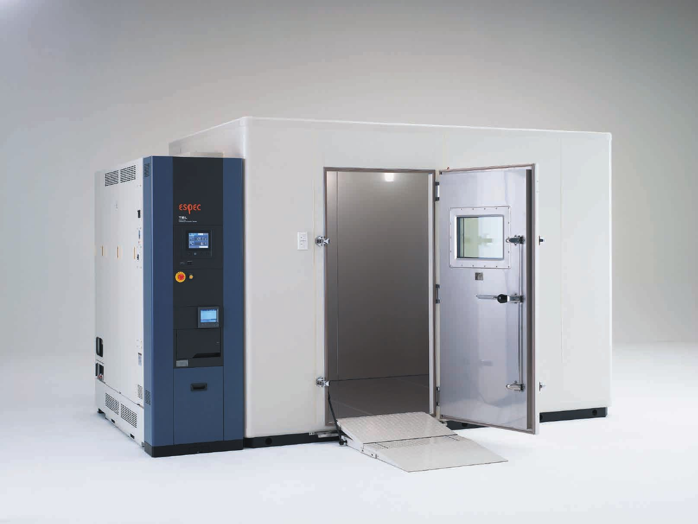

ESPEC 공식 사이트(영문)
카탈로그
고객지원
오시는 길
J&S ENGINEERING
제이에스 엔지니어링 · ESPEC 한국 총대리점
회사소개
제품소개
솔루션
기술자료
서비스
고객지원
서비스접수
견적문의
45년, 환경시험기의
한국 총대리점
1981년부터 ESPEC 장비를 공급하고, 설치와 서비스까지 함께합니다.
Platinous J 항온항습기
제품 보기

워크인 챔버 E 시리즈
제품 보기
열충격 시험기 TSA
제품 보기
제품소개
항온항습기
열충격 시험기
HAST 시험기
급속 온도변화 시험기
워크인 챔버
산업용 오븐
2차전지 시험 장비
반도체·전자부품 평가
카탈로그
서비스·문의
서비스 접수
견적문의
기술자료
오시는 길
회사 소개
공지사항
뉴스
2026.10.26
제품
원디바이스 항온 시험기 MTP-101, 2026 굿디자인상 수상
2026.09.24
제품
EU F-gas 규정에 대응한 CO2 냉매 환경시험기 (유럽 시장용)
2026.08.28
제품
AI 반도체 패키지용 평가 시스템 AMR-SPM·AMI-SPM 출시
2026.05.21
기업
ESPEC, CDP 공급망 참여 평가 최상위 4년 연속 선정
2026.02.04
제품
AI 서버 시험용 고발열 워크인 항온항습실 출시